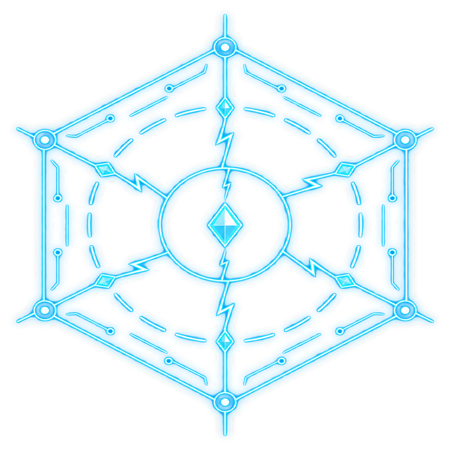

Your Safari looks capped near 60fps. To try for 120fps on ProMotion: turn off Low
Power Mode, then in Settings search Safari's Advanced > Feature Flags and turn off "Prefer Page Rendering
Updates near 60fps".
Click anywhere to start

SYSTEM TERMINATED
Press RESUME to continue
Click/Tap anywhere or press Esc to return
← → to teleport
Abort the voyage? Your flight log will be sealed
here.
Pisces: Space Journey
Settings
PressESCto pause / resume game
Audio
Global100%
BGM100%
SFX100%
In-Game Music
Graphics
To choose a
specific quality, please turn off Smart Quality.
These switches are being wired into the game and do nothing yet. Enemy attack warnings always stay on.
Effect Brightness100%
Flash Intensity100%
Background
Background DetailHow many stars, nebulas and asteroids drift behind the battle. Lower is lighter on weak devices.
Brightness100%
Light Patches100%
Gameplay
Screen ShakeTurning on screen shake may cause lag on some devices.
VibrationShort buzz on hits, sigil picks and skill buttons.
Skip Kanade AnimationThe boss wave still rolls and applies its Timeline Distortion either way.
System
Language
Offline PlayDownload in advance to play without internet.
Restore DefaultsPuts every setting back as it was on first launch. Language stays.
Restore Defaults
Put every setting back as it was on first launch? Language stays as it is.